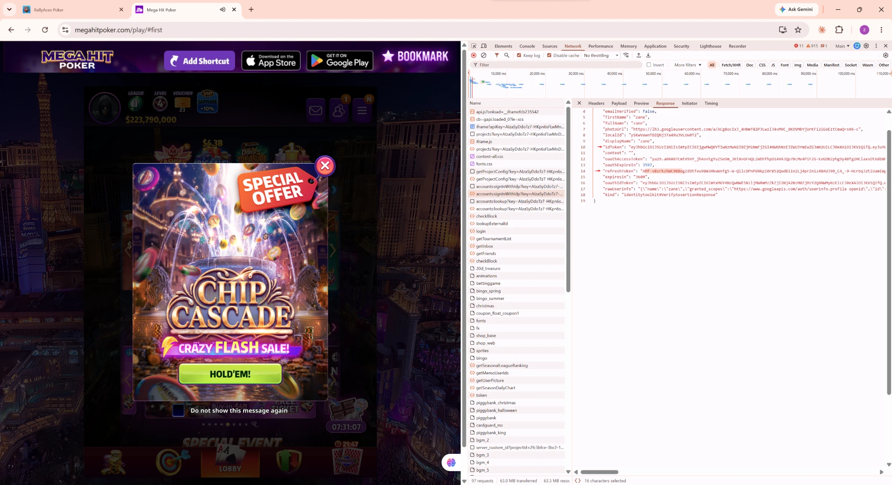
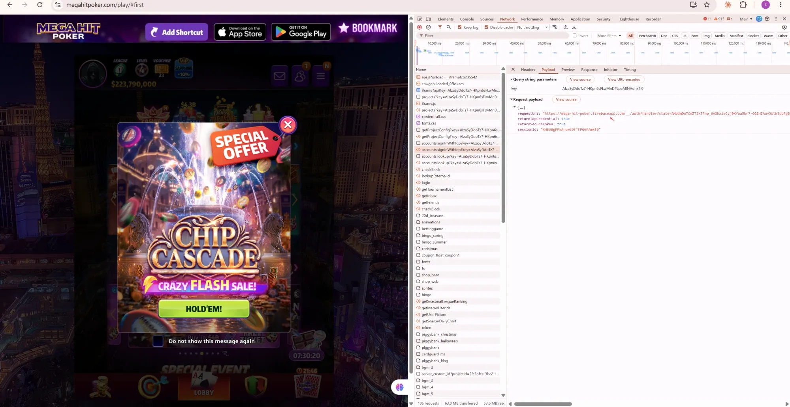
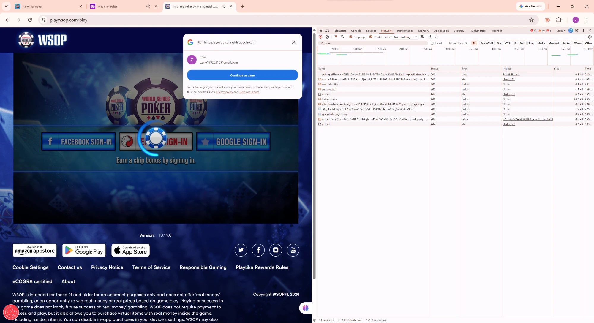
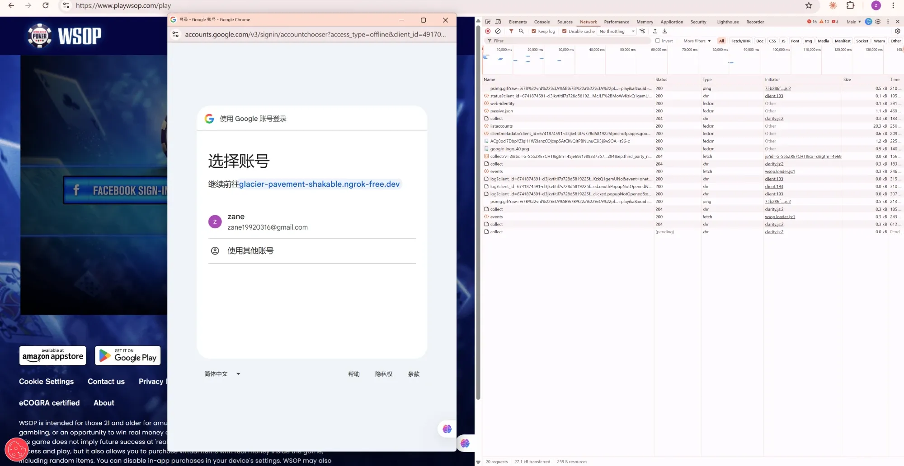

1背景说明Background
Google 登录在不同平台上的原生支持程度不同，这是本次调研和方案选型的出发点：
Native support for Google sign-in differs by platform, which is the starting point for this research and solution selection:
| 平台Platform | 原生 Google 登录支持Native Google Sign-In | 说明Notes |
|---|---|---|
| Android | 原生支持Native support | 可直接调用系统原生的 Google 登录方式，无需额外方案Can call the system’s native Google Sign-In directly; no extra solution needed |
| WebGL（浏览器）WebGL (browser) | 不支持原生No native support | 没有"原生"这个概念，必须通过 JS 方式实现登录There is no “native” layer; sign-in must be implemented in JavaScript |
| iOS | 不支持原生No native support | 没有对应的原生调用方式，同样需要通过 JS 方式实现No equivalent native call is available; it also has to go through a JavaScript approach |
因此本次方案调研聚焦在 WebGL 和 iOS 这两个需要额外接入方式的场景，Android 不在本次范围内。
So this research focuses on WebGL and iOS, the two scenarios that need an additional integration approach. Android is out of scope.
2竞品 Google 登录分析Competitor Google Sign-In Analysis
持续补充中：针对有 Google 登录功能的竞品游戏，抓包分析其具体采用的技术方案。
Work in progress: for competitor games that offer Google sign-in, we capture network traffic to identify the technical approach each one uses.
证据（浏览器 Network 抓包）Evidence (browser Network capture)
- 登录请求打到
identitytoolkit.googleapis.com/v1/accounts:signInWithIdp—— 这是 Firebase Identity Toolkit 的专属接口 - The sign-in request goes to
identitytoolkit.googleapis.com/v1/accounts:signInWithIdp— an endpoint specific to Firebase Identity Toolkit - 请求里的
requestUri指向https://mega-hit-poker.firebaseapp.com/__/auth/handler—— 这个__/auth/handler路径是 Firebase Auth 自动托管的登录中转页，是 Firebase 的特征标识 - The
requestUriin the request points tohttps://mega-hit-poker.firebaseapp.com/__/auth/handler— the__/auth/handlerpath is the sign-in relay page automatically hosted by Firebase Auth, a telltale sign of Firebase - 返回结果里带有
idToken、refreshToken、oauthAccessToken、oauthIdToken等字段，字段命名和结构与本项目 Firebase Auth Demo 实测结果完全一致 - The response contains fields such as
idToken,refreshToken,oauthAccessTokenandoauthIdToken; field names and structure match exactly what we observed in this project’s Firebase Auth Demo


登录交互：One Tap 自动弹出 + 按钮弹窗，两条独立入口Sign-in interaction: One Tap auto-prompt + button popup, two independent entry points
进入页面会先自动弹出 Google 原生的账号选择卡片（One Tap / FedCM），这是用 google.accounts.id.prompt() 实现的自动入口；页面上的"GOOGLE SIGN-IN"按钮是另一条独立的入口，从页面加载起就一直存在，点击后会触发传统的 OAuth 弹窗。关掉 One Tap 卡片后点按钮能弹窗，只是切换到了这条本来就写好的路径，并不是 GIS 库检测到 One Tap 被关闭后自动切换的"降级"行为——这两条入口是 WSOP 前端各自独立实现的。
When the page loads, Google’s native account chooser card (One Tap / FedCM) pops up automatically; this is the automatic entry point implemented with google.accounts.id.prompt(). The “GOOGLE SIGN-IN” button on the page is a separate, independent entry point that exists from page load and opens a traditional OAuth popup when clicked. Clicking the button after closing the One Tap card simply uses this pre-built path; it is not a “fallback” that the GIS library switches to automatically after detecting that One Tap was dismissed. The two entry points are implemented independently in WSOP’s front end.
另外 Google One Tap 本身确实有真实的冷却机制：用户关闭/多次忽略后，Google 会在一段时间内不再自动弹出 One Tap（这个状态由 Google 侧控制），但它只影响"下次是否自动弹出"，跟按钮点击触发弹窗这件事没有关系。
In addition, Google One Tap does have a real cooldown mechanism: after the user dismisses or repeatedly ignores it, Google stops showing One Tap automatically for a while (this state is controlled on Google’s side). It only affects “whether it appears automatically next time” and has nothing to do with the button opening a popup.


证据：解码登录后拿到的 idTokenEvidence: decoding the idToken received after sign-in
抓包拿到登录后的 idToken，直接用 Base64 解码（无需私钥即可解码，只是不能伪造签名），个人信息已脱敏：
We captured the idToken after sign-in and decoded it with plain Base64 (no private key needed to decode — the signature just can’t be forged). Personal details are redacted:
iss 是 accounts.google.com（Google 自己），aud 是原始 Google OAuth Client ID；而 Firebase 签发的 idToken，iss 会是 securetoken.google.com/<firebase项目ID>，并且带一个专属的 firebase 字段。这说明 WSOP 拿到的是 Google 原生 idToken，没有经过 Firebase 转手重新签发。iss is accounts.google.com (Google itself) and aud is a raw Google OAuth Client ID; an idToken issued by Firebase would have iss set to securetoken.google.com/<firebase-project-id> plus a dedicated firebase claim. This shows WSOP receives the native Google idToken, without Firebase re-issuing it.- 登录相关请求类型是
fedcm/web-identity—— 这是浏览器原生 FedCM API 的请求，属于 Google Identity Services（不是 Firebase SDK 的请求特征） - The sign-in related requests are of type
fedcm/web-identity— these come from the browser’s native FedCM API and are part of Google Identity Services (not a signature of the Firebase SDK) - 没有出现任何
__/auth/handler或identitytoolkit.googleapis.com相关请求 - No
__/auth/handleroridentitytoolkit.googleapis.comrequests appear at all - 推测 WSOP 自己的后端拿到这个 Google idToken 后，自行验签、自行维护登录会话（可能转换成自己的 session token 或 cookie），登录状态维持逻辑是自研的，不依赖 Firebase
- We infer that WSOP’s own backend verifies this Google idToken itself and maintains the login session on its own (possibly exchanging it for its own session token or cookie); the session-keeping logic is self-built and does not depend on Firebase
登录入口只有两个选项Only two sign-in options
登录页只提供「Login with Zynga Poker」（自家账号体系）和「Login with Facebook」两个入口，没有 Google 登录选项，也没有 Apple 登录选项。
The sign-in page offers just “Login with Zynga Poker” (its own account system) and “Login with Facebook”. There is no Google option and no Apple option.
3推荐方案Recommendation
结合竞品调研结果，WebGL / iOS 场景下的第三方登录，有两条可行路径：
Based on the competitor research, there are two viable paths for third-party sign-in on WebGL / iOS:
方案二细分：三种实现方式Option 2 breakdown: three implementation approaches
方案二的"自研"部分，在 Google 侧拿凭证的方式上又可以分成三类，区别主要在触发的 API、弹窗形式和前端拿到的东西。
Within Option 2, the way the Google credential is obtained splits into three approaches; they differ in the API that triggers sign-in, the popup style, and what the front end receives.
accounts.id.prompt() 自动弹出页内卡片（One Tap），前端直接拿到 id_token（JWT）。会受 One Tap 冷却机制影响。Uses accounts.id.prompt() to show the automatic in-page card (One Tap); the front end receives the id_token (JWT) directly. Subject to the One Tap cooldown.oauth2.initTokenClient() 弹出独立弹窗，不受冷却影响；但前端只拿到不透明的 access_token，没有可验证的 id_token，后端校验要重写。Uses oauth2.initTokenClient() for an independent popup, unaffected by the cooldown; but the front end only gets an opaque access_token with no verifiable id_token, so backend verification must be rewritten.oauth2.initCodeClient() 弹出独立弹窗，不受冷却影响；前端拿到一次性 code，由后端用 client_secret 换出 id_token，现有校验逻辑可复用。Uses oauth2.initCodeClient() for an independent popup, unaffected by the cooldown; the front end gets a one-time code and the backend exchanges it for an id_token with client_secret, so the existing verification logic can be reused.三种方案对比Comparing the three approaches
| 方案 1Approach 1ID Token 现状Current |
方案 2Approach 2Access Token 不推荐Not recommended |
方案 3Approach 3Authorization Code 推荐Recommended |
|
|---|---|---|---|
| 触发 APITrigger API | accounts.id.prompt() | oauth2.initTokenClient() | oauth2.initCodeClient() |
| 弹窗形式Popup type | 页内自动卡片Automatic in-page card | 独立弹窗Independent popup | 独立弹窗Independent popup |
| 受 One Tap 冷却影响Subject to One Tap cooldown | 是Yes | 否No | 否No |
| 前端直接拿到Frontend gets directly | id_token (JWT) | access_token（不透明字符串） (opaque string) | code（一次性凭证） (one-time credential) |
| 含可验证的 id_tokenIncludes a verifiable id_token | 是Yes | 否No | 是（换取结果里含）Yes (included in the exchange result) |
| 换取步骤在哪Where the exchange happens | 无需换取No exchange needed | 无需换取No exchange needed | 后端用 client_secret 换Backend, via client_secret |
| 后端校验要改Backend verification needs rewriting | — | 要重写Yes, must be rewritten | 不用改，复用现有No, reuses existing logic |
Access Token 方案会把"Google 签名担保身份"降级成"客户端自己上报的数据"，安全性下降，所以推荐采用 Authorization Code 方案。
The Access Token approach downgrades “an identity Google vouches for” to “data the client self-reports” — a real drop in security — so Authorization Code is the recommended approach.